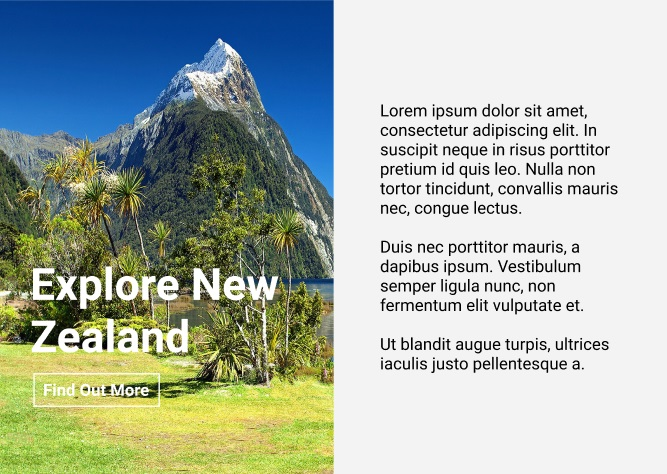
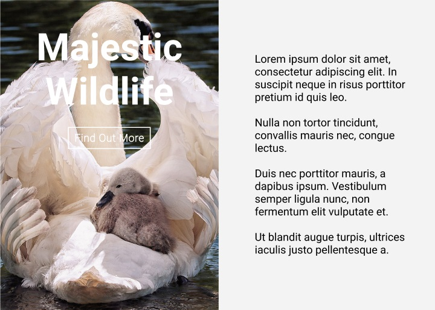

How do you create UI design that has perfect contrast? The lightness or darkness of colors needs to contrast so that the viewer can easily read what is on the page. There are web standards for how far apart the colors need to be in contrast that have been put out by the World Wide Web Consortium (W3C), where the maximum required ratio is 7 to 1. You can easily check if contrasting colors meet all the W3C standards by using this free online tool.
Common issues arise in coding the contrast in CSS, as well as from a design perspective. Which are all covered below.
Should I Use the Same Contrast Rules For Menus And For The Different Sections Of the Website/App?
Menus and sections can be treated a bit differently. Separating a menu from the main page content is not necessary because it does not impact the readability. The same rule applies for different sections of the page, such as the main content of the page and the footer.
However, it can be more visually appealing and give the viewer a break to separate them by a color that has higher contrast. This is not required for a successful app because some of the most successful apps such as Discord do not do this. So be guided by what you feel is best for the project.
To illustrate contrast, here is an example of a badly contrasted element on a page and how it would look with better contrast.
See how the word "Company" in red is a similar hue to the background of the menu bar, which makes it difficult to read.
Here the Logo has a light background added to it making it much easier to read.
A darker color behind the logo improves how easy it is to read the same amount as the light background.
Common Issues That Arise When Applying the W3C Standards Of Contrast And How To Solve Them
A background image typically has a mish mash of colors making the selection of a text color that overlays it not contrast correctly or be readable. This is because parts of the text sit on lighter areas whereas other parts of the text sit on dark areas of the image. Here’s an example:

In order to have sufficient contrast in this case you must overlay the background image on either a white or a black background and then adjust the opacity of the image so that the white or black comes through.
Here's what it looks like applied to the above example:
or
Then using either a light or dark colored text based on what the underlying color is to contrast it perfectly. Don’t worry all the HTML and CSS to can be found below, alternatively, you can edit the image in photoshop or similar to make is lighter or darker.
Another option is to use brand colors as the underlying color. You will just need to make sure that the shade is dark or light enough so that it contrasts well enough with the text. Here are some examples of using a different color under the image.

Difficult to read
Easier to read
What about if I don’t want to lighten or darken the background image because I like the way the image looks?
You can achieve perferfect contrast by moving the elements on the page, if possible for your image, to a region of the image that has a uniform color. For example a section of the image can have a darker shade large enough so that the text can fit there and still look good. Not too squashed. It is important to use your artistic instincts with this and go with what you feel looks good, and, as long as the contrast adheres to web standards it will be user-friendly.
Here is an example of how this would look:
You may have to resize the image so that you have a region large enough for the text to all fit in. For laying out the design it is recommended to use free tools such as Adobe XD or Figma that allow you to mock up your designs before coding them into your website or app. Once you have how you want the design to look use the code below, however, don’t use the background-color or background-blend-mode lines of code. Everything else remains the same.
Another option is to select a different image that is either very dark or light to begin with so that you don't have to resize or modify it.
How Do I Code Transparent Images Overlaying a Background Into My Website/App?
The process is to create a section of the website with a fixed or fluid size using the vw (viewport width) or vh (viewport height)properties that adjust to the size of the screen, then to give that a background color. The code is found below. Within that section add html tags for the text and buttons.
There are a bunch of issues that arise when giving your section a fixed with in pixels or a percentage so I recommend simply copy and pasting the code below.
HTML
Explaining the code in words. Create the section tag in html and give it an id of top-section. Then using CSS give the section a fixed height and width. Assign a background image, and set the background size to be the size of the section using the cover attribute. Set the image to no repeat (it is set to repeat by default), set the background color using rgba. The last value 0.6 refers to the opacity, 0.6 = 60% opacity. So adjust the opacity to match what you came with in your design or experiment for what gives you best contrast and readibility based on your image and background.
The background image color in the example is black, for white use rgba(0,0,0,0.6) because rgba refers to red, green, blue, and alpha. So you are telling it how much red, green, blue and alpha to use on a scale from 0 to 255, 255 being the maximum and alpha being the transparency. For white you want zero red, zero blue, and zero green.
Add the other elements with the text and buttons within the section tags, I'll leave you to do this, and any elements will automatically overlay the background image.
In order to get a brand color as the underlying color rather than black or white as above, you will need to convert your brand color to an rgba format. To do this there are two options, you can switch between hex, and rgba by using an online converter tool for free by searching Google for a hex to rgba converter.
There is also a technique you can use if you already have the colors on your web page or app, which is to use the developer tools. In Chrome this is done by right-clicking anywhere on the page and clicking inspect.
If you are using other browsers the same tools exist and if you use an obscure browser simply download Chrome.
This will bring up the developer tools pane. Then you can find the color in the CSS of the far right section, and hold shift and left click on the small box that has the color in it next to the hex value which should have either three or six numbers preceded by a hash for example: #333 and #678689. The numbers will vary based on what the color is.
Doing so will switch between rgba, hex, and two other color formats that aren’t used commonly.
You may also run into colors that are in CSS by default these can also be changed using the same method for example you may just have color:blue; rather than a hex or rgba color. However, in this case you may have to search for blue in hex, or the shift click method will work on these types of colors aswell.
From there you can copy and paste the rgba value into your CSS code so that you get the correct color.
Related Questions
What Typography Should Be Used in Good UI Design? There are a range of different typefaces one can use. Typically you want to use one font for headings and one font for text. This is a personal preference and depends on the look and feel of the brand. You also will typically want to use Sans Serif fonts because there are easiest to read.
What Colors Should I Use in Good UI Design? There are two types of color schemes to use in UI design. The first is monochromatic in which all colors are shades of the same color. For example all the blues between the darkest blue possible and the lightest blue possible. The other is a range of different colors. The number of colors to use and what colors depends upon the brand design.